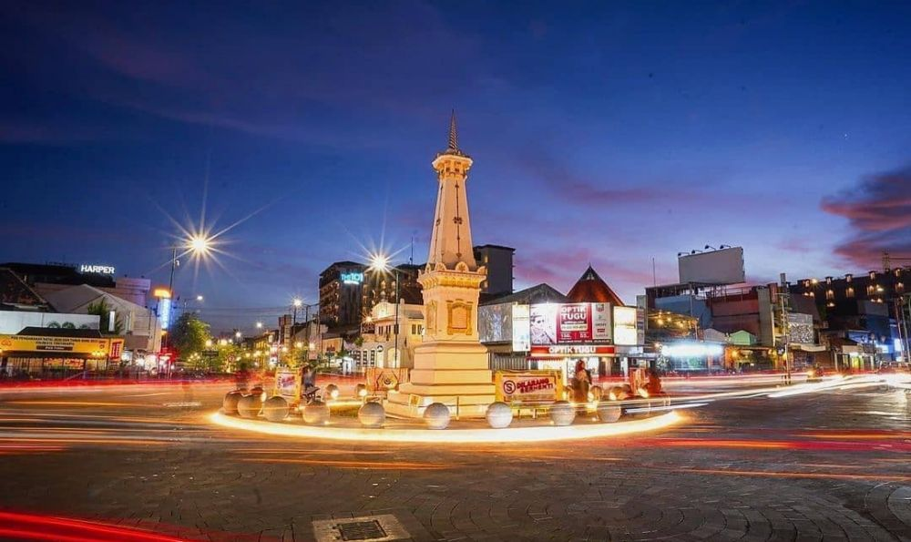

Candi Prambanan
Candi Hindu terbesar di Indonesia yang merupakan warisan dunia UNESCO.
Taman Sari
Bekas taman kerajaan Kesultanan Yogyakarta yang unik dan artistik.

Malioboro
Jalan legendaris untuk belanja oleh-oleh, kuliner, dan wisata budaya.
Pantai Parangtritis
Pantai paling terkenal di Jogja dengan pasir hitam dan ombak besar.
Hutan Pinus Mangunan
Tempat tenang dengan suasana alam dan udara segar di atas perbukitan.